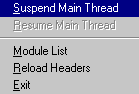
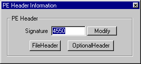
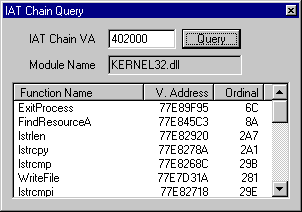

Display all modules in the process, starting from 4MB to 3GB address space. It displays the base addresses and the path of the modules. You can do several things with this list.
|
Program Name
|
IczDump |
|---|---|
|
Author
|
Iczelion |
|
Coded in
|
32-bit assembly language |
|
Email
|
Iczelion@galaxycorp.com |
|
Web page
|
http://win32asm.cjb.net |
|
Copyright notice
|
This program is
a copyrighted freeware. You're free to use it in anyway you like: I cannot
guarantee that it's bug-free. Any damage occurred directly or indirectly
from the use of this utility is your own responsibility. You can't sell this program for profit: I intend this utility to be a freeware and it will always be one. |
|
Greets (in no particular
order)
|
hutch--, ytc, __Ice, TTom, CRowmAN, TheSmurf, Secret, Z-Wing, RevSlim, cTT, masta, n0tty, LLama, mcp, virogen, rudeboy, The_Q, Einride, X-Calibre, X-Logic, the_owl, stone, _iceman__,Kanobi, Ates, baneoldman, fresh, josephCo, Bisoux, WarezPup, immoral, justarius,i_magnus, plushmm, ultraschall, all in #win32asm and #cracking4newbies |
IczDump (Iczelion's PE Dumper) is yet another in-memory Portable Executable File dumper. However, it's different in subtle ways from other dumpers: it runs in the same process as the target because it's a DLL. Once the DLL is in a process, it has the same privilege as the the target. It can:
Furthermore, it's difficult to detect because it doesn't use win32 debug api or any ring-0 tracer. Just about the only way it can be detected is for the target to scan the whole process for it and if that occurs, we can find ways of avoiding the detection.

Display all modules in the process, starting from 4MB to 3GB address space. It displays the base addresses and the path of the modules. You can do several things with this list.

You can modify the PE header signature in this screen. There are two buttons you can press to see further information: FileHeader and OptionalHeader.
You can dump DOS header, PE header and section table to disk. IczDump uses the values in file header to determine the starting/ending addresses to dump. If the headers were destroyed, you must reload the headers before dumping.
his
feature is useful when the import table is completely destroyed: not
even FirstThunk/OriginalFirstThunk values remain. In that case, if you
find an array of dwords which you suspect it is a thunk dword chain,
you can type the address of the dword array into the edit box and then
press Query button.
IczDump will try to validate the
dwords and if they are valid, the name of the functions, their addresses
and ordinals are displayed in the listview control below. Thus it'll
be easier to reconstruct the import table.
This feature is more fine-grained than the IAT chain query. You can put in the value of the dword you suspect that it's an import function address and IczDump will try to resolve the address to module/function name.
IczDump can search the whole module for dwords which match the addresses of functions exported by the modules in the process. It displays the full list in the listbox. You can obtain more information by select an entry in the listbox. The module/function name will be displayed.
Finally, you can report bugs to me, Iczelion@galaxycorp.com. Your input is important for the future development of this freeware utility.